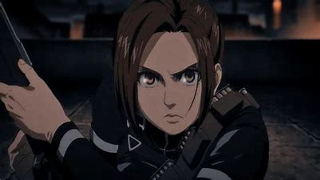
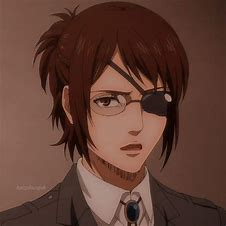
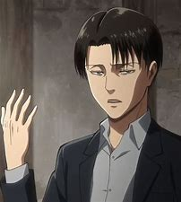

Salut les amis 🖐️ aujourd'hui je vais vous présenter mes personnages préférés de l'animé SNK. Ces différents personnages sont :
Eren, Armin, Mikasa, Jean, Connie, Sasha, Hange, livai.
Eren

Eren Jäger est un membre du Bataillon d'exploration et le protagoniste, puis l'antagoniste principal de la série. Il a vécu dans le District de Shiganshina avec ses parents et Mikasa Ackerman jusqu'à la chute du Mur Maria. Au cours de l'incident, Eren assiste, impuissant, à la mort de sa mère par la main d'un Titan. Cet événement suscite chez Eren une haine intense envers les Titans, ce dernier voulant les éradiquer jusqu'au dernier.
En l'an 847, Eren, Mikasa et Armin Arlelt, leur meilleur ami, s'enrôlent dans la 104ème Brigade d'entraînement. Tous les trois obtiennent leur diplôme, Eren étant à la 5ème place. Ils rejoignent le Bataillon d’exploration après la Bataille de Trost.
Armin

Armin Arlert est le 15e et actuel commandant du Survey Corps, nommé ainsi par Hange Zoë avant leur mort. Il est aussi un ami d’enfance d’Eren Yeager et Mikasa Ackerman, et l’un des deux deutéragonistes de la série[10]. Bien qu’il semble être l’un des plus faibles physiquement du 104e corps d’entraînement, son intelligence et son génie stratégique en font un atout inestimable, surtout lorsqu’il est associé à Hange. Après la bataille du district de Shiganshina, il prit le pouvoir des Titans à Bertolt Hoover et entra en possession du Titan Colosse.
Mikasa

Mikasa Ackerman est une femme assez grande et bien tonique. Elle est d’origine asiatique partielle, avec une peau pâle, des yeux gris et des cheveux noirs hirsutes qui ont été longs jusqu’à ce qu’elle les coupe à la longueur du menton. En l’an 854, ses cheveux sont plus courts et coupés jusqu’à l’arrière de son cou, bien qu’elle porte simultanément une frange sensiblement plus longue. Elle porte un tatouage de l’écusson de la famille Azumabito à l’extérieur de son poignet droit. Il y a une petite cicatrice sous son œil droit, qui était due à une blessure infligée par le Titan d’Eren pendant la bataille du district de Trost. [13] En 857, les cheveux de Mikasa sont devenus visiblement longs et sont attachés en queue de cheval.
Jean

Jean Kirschtein est un diplômé de la 104ème Brigade d'entraînement, ayant rejoint le Bataillon d'exploration de l'Armée Humaine. Il est arrivé 6ème au terme de la période de formation.
Connie

Connie Springer est membre du 104th Training Corps. Il s’est classé 8e dans la classe et est originaire du village rural de Ragako au sein de Wall Rose, sa plus grande ambition étant de rendre sa famille et son village fiers de lui. Après l’obtention de son diplôme, il rejoint le Survey Corps. Il sert actuellement comme officier dans le Survey Corps.
Sasha

Sasha Braus était une diplômée de la 104ème Brigade d'entraînement, en laquelle elle s'était hissée à la 9ème place. Elle avait, par la suite, décidé de rejoindre le Bataillon d'exploration. Elle était également l'une des rares survivantes de la Bataille de Shiganshina, la quasi-totalité des effectifs du bataillon ayant été décimés par leurs opposants. Elle perd cependant la vie lors de la Bataille de Revelio, tuée par Gaby Braun.
Hange

Hange Zoë était le 14e commandant du Survey Corps, nommé ainsi par Erwin Smith avant sa mort. Hange était auparavant un chef d’escouade en charge de la quatrième escouade, ayant pour tâche d’inventer et de mener des recherches novatrices sur les Titans, y compris Eren Yeager. Après avoir été promu commandant, Hange était également responsable de la planification des expéditions, de la gestion du régiment, du recrutement et de toutes les autres responsabilités précédemment assumées par Erwin. À leur mort, Armin Arlert leur succède.
livai

Livaï Ackerman de l'Escouade tactique au sein du Bataillon d'exploration. Il est connu pour être le soldat le plus puissant de l'Armée de Paradis.
J'ai choisi tous ces personnages de l'animé car pour moi ce sont les meilleurs et je trouves qu'ils ont beaucoup marqué l'histoire de Shingeki no kyiojin.